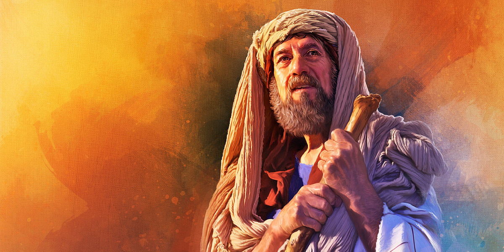

- Samuel
-
O nome Samuel significa “Do Senhor o pedi”. Ele foi o último dos juízes e o primeiro dos profetas na história de Israel e sua história está contada na bíblia. Ele era filho de Ana e Elcana e viveu por volta de 1095 AC.
- De acordo com as escrituras Samuel era ainda pequeno quando ouviu o Senhor lhe chamar, num tempo em que a Palavra do Senhor era muito rara e e visões não eram frequentes. Certa noite ouviu uma voz “Samuel, Samuel” e acordou, foi até Eli e disse “Eis-me aqui, pois me chamaste”. Eli esclareceu que não o chamou. Isso ocorreu ainda mais duas vezes até que Eli percebeu que o próprio Deus estava chamando o menino e o instruiu a se prontificar quando o Senhor o chamasse novamente. E assim ocorreu. Samuel voltou para o templo do Senhor (lugar onde também dormia naquela noite) e quando ouviu o Senhor o chamando novamente respondeu “Eis-me aqui Senhor fala que o teu servo ouve”. E foi desta forma que o Senhor começou a palestrar com Samuel. - 1 Samuel 15:29 .
- Elias
-
Elias foi um profeta conhecido por ter realizado grandes feitos em nome do Senhor. Por meio de suas profecias desceu fogo do céu, choveu, tornou a viver o filho de uma viúva, e entre outros, ele foi arrebatado em uma carruagem de fogo, e ainda, teria aparecido junto a Moisés durante a transfiguração de Jesus.
- Elias viveu no tempo do reinado de Acabe, e sua história está relatada na bíblia, mais precisamente no livro de I Reis.— Tiago 5:17.
- Abraão
-
Abraão é uma das figuras bíblicas mais conhecidas, considerado um importante patriarca tanto pelos judeus, quanto por cristãos e muçulmanos, pois está no alicerce destas três maiores linhagens espirituais da história da Humanidade. Seu nome, em hebraico Avraham ou ’Abhrāhām, tem a conotação de ‘pai ou líder de muitos’.- Gênesis 22:14
- Jó
-
Jó é provado e mesmo após perder todos os bens, a família e a saúde, não amaldiçoa a Deus. Certa passagem mostra que sua própria esposa olha para pos tumores que surgiuram em sua pele, provocando coçeira e sofrimento, e questiona sua fé dizendo: “Então, sua mulher lhe disse: Conservas tua tua integridade? Amaldiçoa a Deus e morre”
- O Senhor honra a obediência de Jó e restaura sua saúde, felicidade e prosperidade de forma muito maior do que sua situação anterior. — Jó 1:21.
- Noé
-
Para o censo comum, Noé é lembrado por ter construído uma grande arca, seguindo uma orientação do próprio Deus, e ter abrigado nela um casal de cada espécie de animal e toda sua família. Isso ocorreu por motivo de um dilúvio que viria e de fato, após a arca, houve uma chuva de quarenta dias sobre a terra. Consequentemente, tudo o que tinha fôlego de vida em suas narinas, tudo o que havia em terra seca, e não estava abrigado na arca, morreu.
- De acordo com as escrituras, a questão seria um tanto mais profunda. Embora não seja a primeira aliança de Deus com seu povo (a exemplo da aliança com Abraão), o altar de Noé é o primeiro altar mencionado nas escrituras, como local de adoração. Noé, semelhante ao que houve com Adão, recebeu a tarefa de “repovoar” a terra, onde sua primeira atitude foi adorar a Deus. — Gênesis 9:13.
- Davi
-
Davi foi criado como pastor de ovelhas. Essa profissão lhe ensinou muitas qualidades que ele pôs em prática ao longo de sua vida. Quando ele assumiu o trono de Israel, por exemplo, ele demonstrou ter coragem, dedicação e cuidado com o povo. Exercendo sua profissão de apascentar ovelhas, Davi enfrentou situações desafiadoras, como um urso e um leão. O texto bíblico afirma que Davi era ruivo, do hebraico ‘admoni, “vermelho”, e possuía boa aparência.
- O rei Davi é citado inúmeras vezes não apenas no Antigo Testamento, mas também no Novo Testamento. A menção mais importante sobre sua pessoa é como sendo um ancestral segundo a carne de Jesus. Ele é citado com destaque na genealogia de Jesus nos Evangelhos. - Atos 13:22.
-
